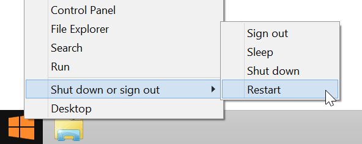

Set Up Your Computer - Windows (manual installation)
This setup document will guide you through manually preparing your Windows 32-bit or 64-bit computer with any Windows-specific software or drivers required for Intel® Edison development.
Are you running 64-bit Windows and have a good internet connection?
For a more streamlined setup process, try the integrated program installer. Refer to Set Up Your Computer - Windows (64-bit integrated installer) ».
Table of contents
Install Intel® Edison standalone drivers
The Windows standalone drivers for Intel® Edison include several USB drivers in one installer package. These drivers enable important features, such as:
- Composite Device Class (CDC) for programming the board via the Arduino IDE,
- Remote Network Driver Interface Spec (RNDIS) for Ethernet over USB, and
- Device Firmware Upgrade (DFU) for updating firmware on devices.

Install FTDI serial drivers
FTDI CDM drivers allow your computer to communicate with USB serial devices, including the Intel® Edison. View detailed instructions »

Restart your computer
To ensure driver installation changes take effect, reboot your Windows computer at this point.
